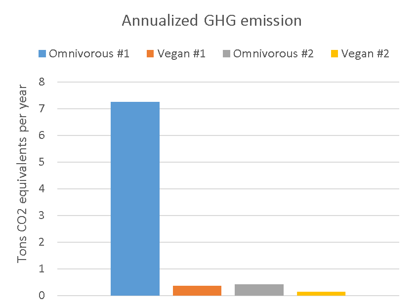
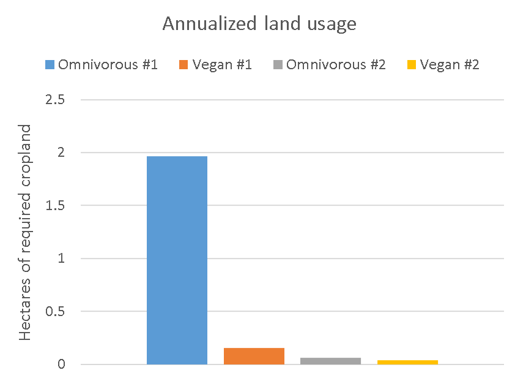
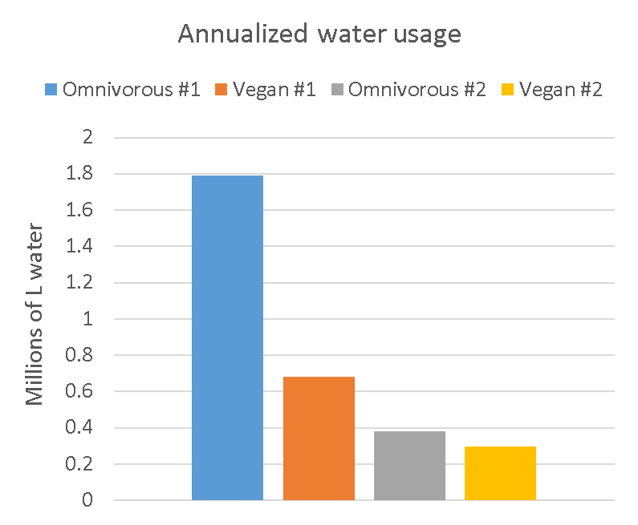
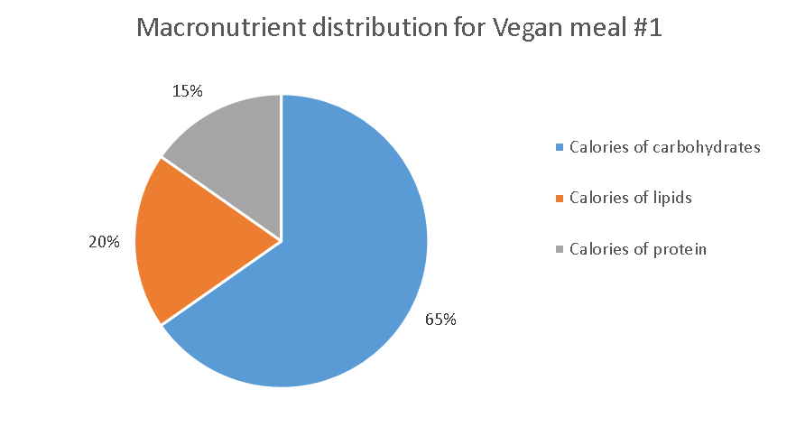
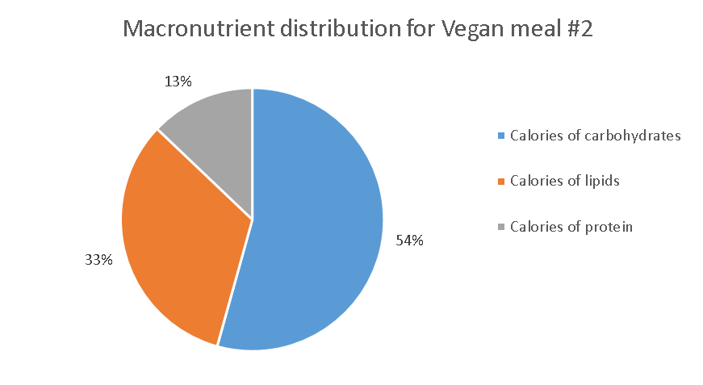
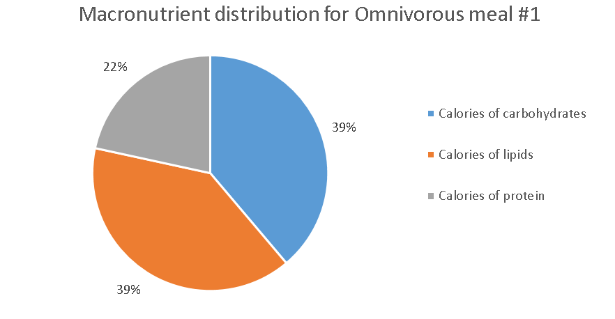
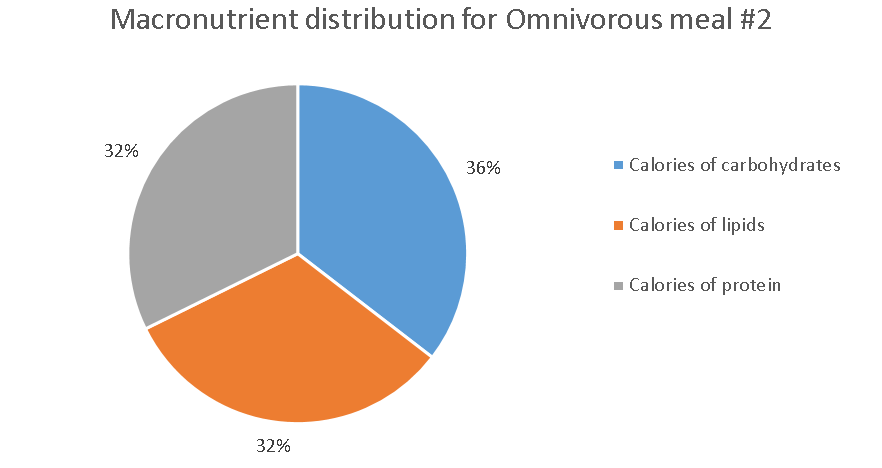

Publications
*Featured in the Fall 2020 edition of Canadian Vegan magazine
Abstract
A Thanksgiving meal is a terrific end to the calendar year. The meal selection, however, can profoundly influence your health, animal lives, and the environment. This study evaluates the health and sustainable implications of hypothetical omnivore and vegan meals.
Results
The omnivorous and vegan meals of Tables 2 were evaluated. The environmental impact differences between the two meal alternatives, after consuming the meals every day for a year, are listed in Table 1 with tangible units and are displayed in Figures 1-3 with the pure impact quantities. The nutritional differences between the two meal alternatives were quantified in Table 3 and Figures 4 with USDA nutritional information, and then were compared with the daily USDA Recommended Dietary Allowances (RDAs) for a 31-50 year old woman (58 kg) and a 31-50 years old man (75 kg) in Tables 4-5, respectively. The omnivorous meals met 22 +\- 0 of the USDA targets for the man and met 26 +\- 3 targets for the woman while the vegan meals met 27 +\- 2 of the USDA targets for the man and met 30 +\- 2 targets for the woman.
Table 1: The environmental impact savings from Omnivorous meal #1 to Vegan meal #1 and from Omnivorous meal #2 to Vegan meal #2.
| Sustainable metric | Meals #1 | Meals #1 | Tangible units |
|---|---|---|---|
| CO2-equivalents | 33,300 | 1280 | km driven in a car (9 L / 100 km ; or 26 miles / gallon) |
| Water usage | 10,400 | 760 | Filled, 111L, Bathtubs |
| Land-usage | 2.8 | 0.033 | City blocks of agricultural land |

Figure 1: GHG emissions from the annualized Thanksgiving meal.

Figure 2: Land usage from the annualized Thanksgiving meal.

Figure 3: Water usage from the annualized Thanksgiving meal.
Discussion
Beef is environmentally catastrophic. The drastic difference between omnivorous meal #1 and the other meals in each of Figures 1-3 and in the large differences of Meals #1 in Table 1 reflect the impact of a daily beef steak, even relative to the turkey in omnivorous meal #2. The omnivorous meals were consistently excessive with saturated fat and sodium, and deficient in omega 3 fatty acids, the minerals magnesium and manganese, and the vitamin folate. The vegan meals were consistently deficient in methionine and sodium.
Conclusion
The study confirms that beef is exceptionally impactful. The impact of white meat diets were comparably impactful to high legume vegan diets, although further analysis is necessary to reveal the subtler differences between the non-beef omnivorous and vegan diets. The nutritional profile of the vegan diets appears healthier than the omnivorous diets, although this study is unable to establish statistical significance for the results. Peer-reviewed literature should be sought for more rigorous comparisons with the vegan diet1,2.
Methods
The meals were adjusted to maintain equivalent nutrition. The two omnivorous meals and two vegan meals in Tables 2were quantitatively evaluated with USDA nutritional data from the https://nutritiondata.self.com/ website and were calorically balanced, despite that the omnivorous meals were inherently more concentrated with fat and protein since meat exclusively consists of fat and protein. Every meal attempted to reflect practical serving sizes while emphasizing foods in the databases.
Two environmental impact databases were used. The greenhouse gas and land emission data were sourced from a recent article in Science 3. The database described general food categories like "Poultry" in lieu of specific foods like "white turkey meat", which creates an approximate or average perspective of the dietary environmental impacts in this study. The water impact data was sourced from two recent studies4,5 that summarize plant and animal foods with improved yet still approximate food specificity.
The tangible values of Table 2 were converted by various sources. The average bath size was averaged from published literature of 105 L 6 and colloquial values of 113 L and 115 L. The CO2-eq emissions of driving was acquired with a 8.887 (kg CO2 / gallon of gasoline) conversion value by the EPA7. The land was converted to city blocks with the unit conversion of 1.544 (city blocks / hectare).
Table 2: Omnivorous and vegan meals #1 and #2.
| Quantities | Practical values | Meals #2 |
|---|---|---|
| Omnivorous meal #1 | ||
| Boneless steak | 307 g | 1 serving |
| Homemade mashed potatoes | 1273 g | 3 servings |
| -> Butter (per 3 servings) | 28 g | 2 tablespoons |
| -> Whole Milk (per 3 servings) | 245 g | 1 cup |
| -> Baked potatoes (per 3 servings) | 1000g | 3-4 potatoes |
| Omnivorous meal #2 | ||
| Roasted Light Turkey | 420 g | 3 servings |
| Homemade mashed potatoes | 446 g | 1 servings |
| -> Butter (per 3 servings) | 28 g | 2 tablespoons |
| -> Whole Milk (per 3 servings) | 245 g | 1 cup |
| -> Baked potatoes (per 3 servings) | 1000g | 3-4 potatoes |
| Butter | 45 g | ~3 tablespoons |
| Carrots | 100 g | 2 carrots |
| Plain roll | 172 g | 2 rolls |
| Vegan meal #1 | ||
| Kidney beans (dry) | 294 g | ~1.5 cups |
| Baked potato | 320 g | 1 potato |
| Durum wheat (dry) | 163 g | ~0.75 cups |
| Canola oil | 39 g | ~3 tablespoons |
| Vegan meal #2 | ||
| Lentil meatloaf | 409 g | 1.5 servings |
| -> Cooked lentils (per 2 servings) | 120 g | 1.5 cups |
| -> Rolled oats (per 2 servings) | 245 g | 1 cup |
| -> English walnuts (per 2 servings) | 59 g | 0.5 cups |
| Olive oil | 32 g | 2.5 tablespoons |
| Broccoli | 560 g | 2 large stalks |
| Baked potato | 156 g | 0.5 baked potato |
| Durum wheat (dry) | 163 g | ~0.75 cups |
Table 3: Nutrients for the omnivorous and vegan Thanksgiving meals #1 and #2.
| Nutrient | Omnivorous #1 | Vegan #1 | Omnivorous #2 | Vegan #2 |
|---|---|---|---|---|
| Mass (g) | 1452.7 | 1314.8 | 1183.0 | 1253.6 |
| Calories (kcal) | 2110.2 | 2129.2 | 2001.5 | 2020.6 |
| Calories of carbohydrates (kcal) | 819.0 | 1389.3 | 709.0 | 1096.8 |
| fiber (g) | 13.3 | 55.6 | 11.6 | 55.7 |
| Calories of lipids (kcal) | 834.6 | 414.5 | 645.3 | 662.1 |
| saturated (g) | 51.3 | 4.2 | 40.2 | 9.8 |
| omega 3 (g) | 1.3 | 5.0 | 1.0 | 5.4 |
| omega 6 (g) | 5.4 | 9.8 | 8.1 | 25.6 |
| Calories of protein (kcal) | 455.3 | 324.7 | 646.0 | 260.3 |
| tryptophan (g) | 1.4 | 1.2 | 1.8 | 1.0 |
| threonine (g) | 4.8 | 3.2 | 6.6 | 2.8 |
| isoleucine (g) | 5.1 | 4.2 | 7.6 | 3.2 |
| leucine (g) | 8.6 | 7.5 | 12.0 | 5.6 |
| lysine (g) | 8.7 | 5.5 | 12.9 | 3.9 |
| methionine (g) | 2.7 | 1.3 | 4.1 | 1.2 |
| cystine (g) | 1.3 | 1.2 | 1.9 | 1.4 |
| phenylalanine (g) | 4.6 | 5.3 | 6.4 | 3.9 |
| tyrosine (g) | 4.0 | 2.4 | 5.9 | 2.3 |
| valine (g) | 5.7 | 5.1 | 8.0 | 4.1 |
| arginine (g) | 6.6 | 4.7 | 9.9 | 5.9 |
| histidine (g) | 3.6 | 2.5 | 4.6 | 2.0 |
| alanine (g) | 6.1 | 3.9 | 8.8 | 3.5 |
| aspartic acid (g) | 12.9 | 11.0 | 15.0 | 8.2 |
| glutamic acid (g) | 17.7 | 19.4 | 28.6 | 17.4 |
| glycine (g) | 5.5 | 3.6 | 7.2 | 3.4 |
| proline (g) | 40.4 | 6.3 | 7.9 | 4.5 |
| serine (g) | 4.4 | 5.5 | 7.0 | 3.9 |
| Vitamin A (IU) | 854.8 | 7.4 | 18511.6 | 8696.3 |
| lutein+zeaxanthin | 0.0 | 29.5 | 709.4 | 6052.2 |
| Vitamin C (mg) | 115.4 | 81.5 | 48.9 | 388.2 |
| Vitamin D (IU) | 102.3 | 0.0 | 65.2 | 0.0 |
| Vitamin E (alpha-tocopherol equivalents) (mg) | 3.0 | 7.3 | 3.2 | 13.5 |
| Vitamin K (ug) | 10.9 | 97.5 | 37.1 | 815.4 |
| Vitamin B1 (mg) | 1.6 | 2.2 | 1.9 | 2.5 |
| Vitamin B2 (mg) | 1.3 | 0.7 | 1.4 | 1.1 |
| Vitamin B3 (mg) | 24.8 | 19.1 | 43.7 | 15.9 |
| Vitamin B5 (mg) | 7.2 | 4.3 | 6.1 | 8.7 |
| Vitamin B6 (mg) | 4.4 | 2.6 | 4.0 | 3.0 |
| Vitamin B9 (ug) | 120.1 | 1095.2 | 250.4 | 1204.8 |
| Vitamin B12 (ug) | 11.3 | 0.0 | 2.2 | 0.0 |
| Choline (mg) | 502.7 | 271.5 | 458.4 | 342.7 |
| Calcium (mg) | 337.3 | 360.2 | 543.5 | 423.3 |
| Iron (mg) | 13.5 | 25.1 | 13.6 | 23.1 |
| Magnesium (mg) | 333.5 | 631.6 | 269.6 | 675.0 |
| Phosphorous (mg) | 1378.7 | 2063.6 | 1427.3 | 2183.5 |
| Potassium (mg) | 5087.7 | 5269.2 | 3260.5 | 4283.1 |
| Sodium (mg) | 2620.5 | 32.9 | 2444.5 | 616.7 |
| Zinc (mg) | 20.8 | 15.5 | 12.2 | 16.5 |
| Copper (mg) | 2.1 | 3.0 | 1.2 | 3.4 |
| Manganese (mg) | 1.8 | 8.9 | 1.9 | 13.2 |
| Selenium (ug) | 102.8 | 155.3 | 186.2 | 104.4 |
Table 4: Female nutritional adequacy of the omnivorous and vegan meals #1 and #2.
| Nutrient | Female (58 kg) RDA requirements | Omnivorous #1 | Vegan #1 | Omnivorous #2 | Vegan #2 |
|---|---|---|---|---|---|
| Calories (kcal) | 1800 | 117% Met | 118% Met | 111% Met | 112% Met |
| Calories of carbohydrates (kcal) | 45-65% | Met | Low | Low | Met |
| fiber (g) | 25 | Low | Met | Low | Met |
| Calories of lipids (kcal) | 20-35% | low | Met | Low | low |
| saturated (g) | < 20 | High | Met | High | Met |
| omega 3 (g) | 1.1 | Met | Met | Low | Met |
| omega 6 (g) | 12 | Low | Low | Low | Met |
| Calories of protein (kcal) | 10-35% | Met | Met | Low | Met |
| tryptophan (g) | 0.29 | Met | Met | Met | Met |
| threonine (g) | 1.16 | Met | Met | Met | Met |
| isoleucine (g) | 1.102 | Met | Met | Met | Met |
| leucine (g) | 2.436 | Met | Met | Met | Met |
| lysine (g) | 2.204 | Met | Met | Met | Met |
| methionine (g) | 1.102 | Met | Met | Met | Met |
| phenylalanine (g) | 1.914 | Met | Met | Met | Met |
| valine (g) | 1.392 | Met | Met | Met | Met |
| histidine (g) | 0.812 | Met | Met | Met | Met |
| Vitamin A (IU) | 3000 | Low | Low | Met | Met |
| Vitamin C (mg) | 75 | Met | Met | Low | Met |
| Vitamin D (IU) | 600 | Low | Low | Low | Low |
| Vitamin E (alpha-tocopherol equivalents) (mg) | 15 | Low | Low | Low | Low |
| Vitamin K (ug) | 90 | Low | Met | Low | Met |
| Vitamin B1 (mg) | 1.1 | Met | Met | Met | Met |
| Vitamin B2 (mg) | 1.1 | Met | Low | Met | Low |
| Vitamin B3 (mg) | 14 | Met | Met | Met | Met |
| Vitamin B5 (mg) | 5 | Met | Low | Met | Met |
| Vitamin B6 (mg) | 1.3 | Met | Met | Met | Met |
| Vitamin B9 (ug) | 400 | Low | Met | Low | Met |
| Vitamin B12 (ug) | 2.4 | Met | Low | Low | Low |
| Choline (mg) | 425 | Met | Low | Met | Low |
| Calcium (mg) | 1000 | Low | Low | Low | Low |
| Iron (mg) | 18 | Low | Met | Low | Met |
| Magnesium (mg) | 320 | Met | Met | Low | Met |
| Phosphorous (mg) | 700 | Met | Met | Met | Met |
| Potassium (mg) | 2600 | Met | Met | Met | Met |
| Sodium (mg) | 1500 | Met | Low | Met | Low |
| Zinc (mg) | 8 | Met | Met | Met | Met |
| Copper (mg) | 0.9 | Met | Met | Met | Met |
| Manganese (mg) | 1.8 | Met | Met | Met | Met |
| Selenium (ug) | 55 | Met | Met | Met | Met |
| Total Met | 28 | 28 | 23 | 31 | |
| Total Low | 10 | 11 | 15 | 8 | |
| Total High | 1 | 0 | 1 | 0 |
Table 5: Male nutritional adequacy of the omnivorous and vegan meals #1 and #2.
| Nutrient | Male (75 kg) RDA requirements | Omnivorous #1 | Vegan #1 | Omnivorous #2 | Vegan #2 |
|---|---|---|---|---|---|
| Calories | 2300 | 91.7% Met | 92.6% Met | 87.0% Met | 87.9% Met |
| Calories of carbohydrates | 45-65% | Low | Met | Low | Met |
| fiber (g) | 38 | Low | Met | Low | Low |
| Calories of lipids | 20-35% | High | low | Met | Met |
| saturated (g) | < 25 | High | Met | High | Met |
| omega 3 (g) | 1.6 | Low | Met | Low | Met |
| omega 6 (g) | 17 | Low | Low | Low | Met |
| Calories of protein | 10-35% | Met | Met | Met | Met |
| tryptophan (g) | 0.375 | Met | Met | Met | Met |
| threonine (g) | 1.5 | Met | Met | Met | Met |
| isoleucine (g) | 1.425 | Met | Met | Met | Met |
| leucine (g) | 3.15 | Met | Met | Met | Met |
| lysine (g) | 2.85 | Met | Met | Met | Met |
| methionine (g) | 1.425 | Met | Low | Met | Low |
| phenylalanine (g) | 2.475 | Met | Met | Met | Met |
| valine (g) | 1.8 | Met | Met | Met | Met |
| histidine (g) | 1.05 | Met | Met | Met | Met |
| Vitamin A (IU) | 3000 | Low | Low | Met | Met |
| Vitamin C (mg) | 90 | Met | Low | Low | Met |
| Vitamin D (IU) | 600 | Low | Low | Low | Low |
| Vitamin E (alpha-tocopherol equivalents) (mg) | 15 | Low | Low | Low | Low |
| Vitamin K (ug) | 120 | Low | Low | Low | Met |
| Vitamin B1 (mg) | 1.2 | Met | Met | Met | Met |
| Vitamin B2 (mg) | 1.3 | Low | Low | Met | Low |
| Vitamin B3 (mg) | 16 | Met | Met | Met | Low |
| Vitamin B5 (mg) | 5 | Met | Low | Met | Met |
| Vitamin B6 (mg) | 1.3 | Met | Met | Met | Met |
| Vitamin B9 (ug) | 400 | Low | Met | Low | Met |
| Vitamin B12 (ug) | 2.4 | Met | Low | Low | Low |
| Choline (mg) | 550 | Low | Low | Low | Low |
| Calcium (mg) | 1000 | Low | Low | Low | Low |
| Iron (mg) | 8 | Met | Met | Met | Met |
| Magnesium (mg) | 420 | Low | Met | Low | Met |
| Phosphorous (mg) | 700 | Met | Met | Met | Met |
| Potassium (mg) | 3400 | Met | Met | Low | Met |
| Sodium (mg) | 1500 | High | Low | High | Low |
| Zinc (mg) | 11 | Met | Met | Met | Met |
| Copper (mg) | 0.9 | Met | Met | Met | Met |
| Manganese (mg) | 2.3 | Low | Met | Low | Met |
| Selenium (ug) | 55 | Met | Met | Met | Met |
| Total Met | 22 | 25 | 22 | 29 | |
| Total Low | 14 | 14 | 15 | 10 | |
| Total High | 3 | 0 | 2 | 0 |




Figure 4: The caloric distribution for each meal.
References
- Rabès, A. et al. Greenhouse gas emissions, energy demand and land use associated with omnivorous, pesco-vegetarian, vegetarian, and vegan diets accounting for farming practices. Sustain. Prod. Consum. 22, 138-146 (2020).
- Aleksandrowicz, L., Green, R., Joy, E. J. M., Smith, P. & Haines, A. The impacts of dietary change on greenhouse gas emissions, land use, water use, and health: A systematic review. PLoS One 11, 1-16 (2016).
- Poore, J. & Nemecek, T. Reducing food's environmental impacts through producers and consumers. Science (80-. ). 360, 987-992 (2018).
- Mekonnen, M. M. & Hoekstra, A. Y. The green, blue, and grey water footprint of crops and derived crop products. Hydrol. Earth Syst. Sci. 15, 1577-1600 (2011).
- Mekonnen, M. M. & Hoekstra, A. Y. A global assessment of the water footprint of farm animal products. Ecosystems 15, 401-415 (2012).
- Hall, M. J., Hooper, B. D. & Postle, S. M. Domestic per Capita Water Consumption in South West England. Water Environ. J. 2, 626-631 (1988).
- EPA. Greenhouse gas equivalencies calculator - calculations and references. https://www.epa.gov/energy/greenhouse-gases-equivalencies-calculator-calculations-and-references.